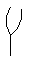
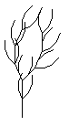
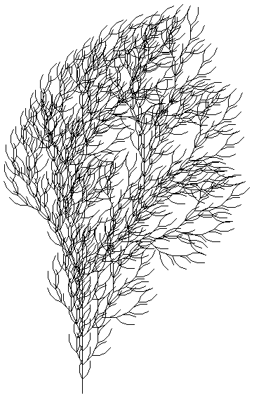

Here are the first, second, and fourth iterates of the L-System with
| axiom = F and |
| production rule F -> FF-[-F+F+F]+[+F-F-F] (all other symbols are replaced by themselves) |
taking q = 22 deg.
|  |  |  |
With this example, we see the potential of L-Systems for making realistic forgeries of (the branching structure of) plants. Add varying thickness of the branches, a texture map for bark, and leaves, and a bit of randomness, ... and we have a realistic plant image.
Return to Bracketed L-Systems.